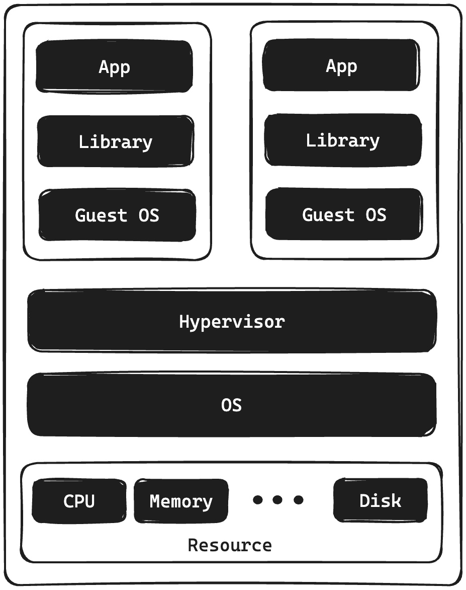
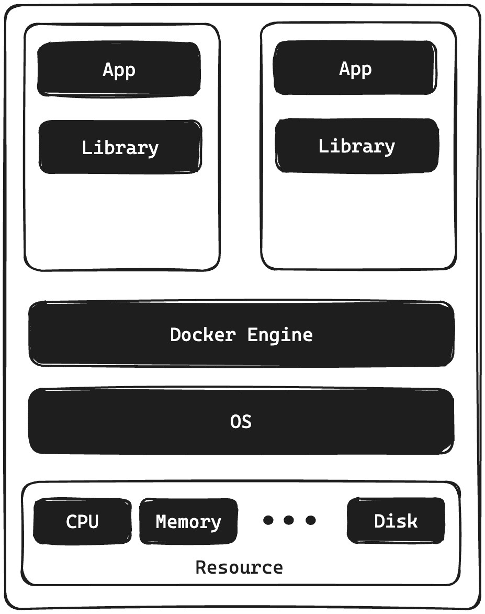
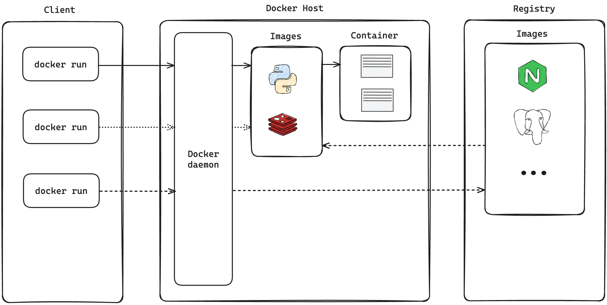
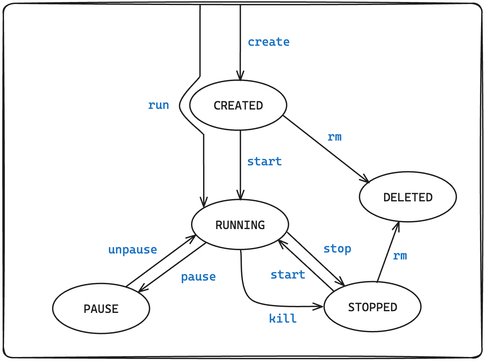
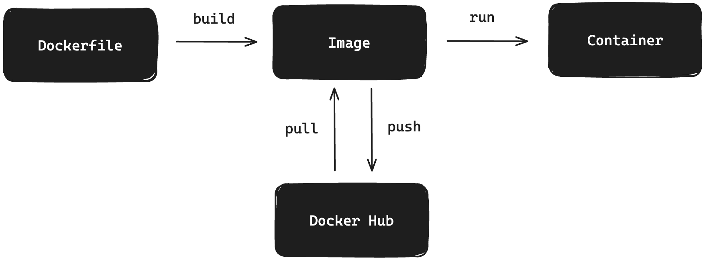

Docker 란 무엇일까요?
-
Open Platform 입니다.
-
어플리케이션에서 인프라를 분리시켜 줍니다.
-
신속합니다.
-
인프라를 어플리케이션 관리하는 것 처럼 관리 할 수 있습니다.
-
코드 배포에 용이합니다.
-
컨테이너 기반 가상화 도구
(리눅스 컨테이너 기술인 LXC(Linux Containers) 기반) -
어플리케이션을 컨테이너라는 단위로 격리하고 실행하고 배포하는 기술입니다.
-
다양한 운영체제에서 사용할 수 있으며,
컨테이너된 어플리케이션을 손쉽게 빌드, 배포, 관리할 수 있는 다양한 기능을 제공합니다. -
위 기능들을 통해 어플리케이션을 빠르게 개발하고, 효율적으로 배포, 관리할 수 있습니다.
Container는 무엇일까요?
- 컨테이너는 가상의 기술 중 하나 입니다.
- 호스트 운영체제 위에 여러 개의 격리된 환경을 생성합니다.
- 각각의 컨테이너 안에서 어플리케이션을 실행합니다.
가상화(Virtualization) 기술이란 무엇일까요?
하나의 물리적인 컴퓨터 자원(CPU, 메모리, 저장장치 등)을
가상적으로 분할 하여 여러 개의 가상 컴퓨터 환경을 만들어 내는 기술입니다.
이를 통해 물리적인 컴퓨터 자원을 더욱 효율적으로 사용할 수 있으며,
서버나 어플리케이션 등을 운영하는데 있어 유연성과 안정성을 제공합니다.
하이퍼바이저(Hypervisor)란?

- 가상머신(Virtual Machine, VM)을 생성하고 구동하는 소프트웨어
- OS에 자원을 할당 및 조율
- OS들의 요청을 번역하여 하드웨어에 전달
대표적으로 vmware 가 있습니다.
Virtual Machine vs Container

- Virtual Machine과는 다르게 Docker에는 Guest OS가 올라가지 않습니다.
- 컨테이너는 Docker-engin 위에 application에 실행할 필요한 바이너리만 올라갑니다.
- 그 외의 커널 부분은 호스트의 커널을 공유하게 되빈다.
- 호스트의 커널과 container의 터널과 다르다면? 다른 부분 만큼만 패키징 됩니다.
이를 통해 가벼워집니다.
컨테이너 기반 특징
- 리눅스 커널의 기능을 사용하여 만들어졌습니다.
- chroot: 파일 시스템을 격리
- namespace : 프로세스 격리
- group : 하드웨어 자원 격리
- 프로세스 단위의 격리 환경입니다.
Docker Architecture

도커 데몬 (Docker daemon == dockered)
- 도커 엔진의 핵심 구성 요소
- 도커 호스트에서 컨테이너를 관리하고 실행하는 역할
- 컨테이너를 생성, 시작, 중지, 삭제하는 등의 작업을 수행
- 컨테이너 이미지를 관리 하고,
- 외부에서 이미지를 다운로드하고 빌드하는 작업을 수행
Docker Object
- 도커 이미지 : 도커 컨테이너를 만들기 위한 읽기 전용 템플릿
- 도커 컨테이너 : 도커 하나의 이미지의 실행 가능한 인스턴스
(어플리케이션을 실행하기 위한 모든 파일과 설정 정보를 포함하는 패키지 입니다.)
도커 레지스트리 (Docker Registries)
- 도커 이미지 (Docker Image)를 관리하고 저장하는 곳 입니다.
- Docker hub: 디플토 레즈스트리, 누구나 접근 가능한 공개형 저장소 입니다.
도커 네트워크
컨테이너 라이프 사이클

run vs start
- run : create + start로 새 컨테이너를 생성하고 시작합니다.
- start : 이미 존재하는 컨테이너를 시작합니다.
stop vs kill 명령어의 차이
- stop : gracefull 하게 컨테이너를 중지 시킵니다.
(ex: 하고 있는 작업이 있다면 그 작업이 끝나고 중지 시킵니다.) - kill : 어떠한 작업도 기다리지 않고 즉각적으로 중지시킵니다.
Dockerfile
